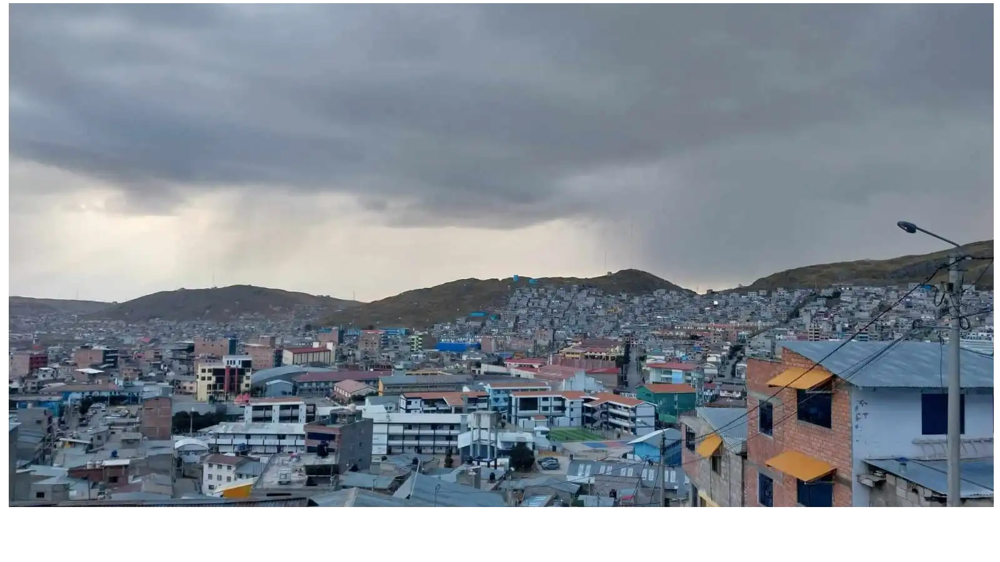
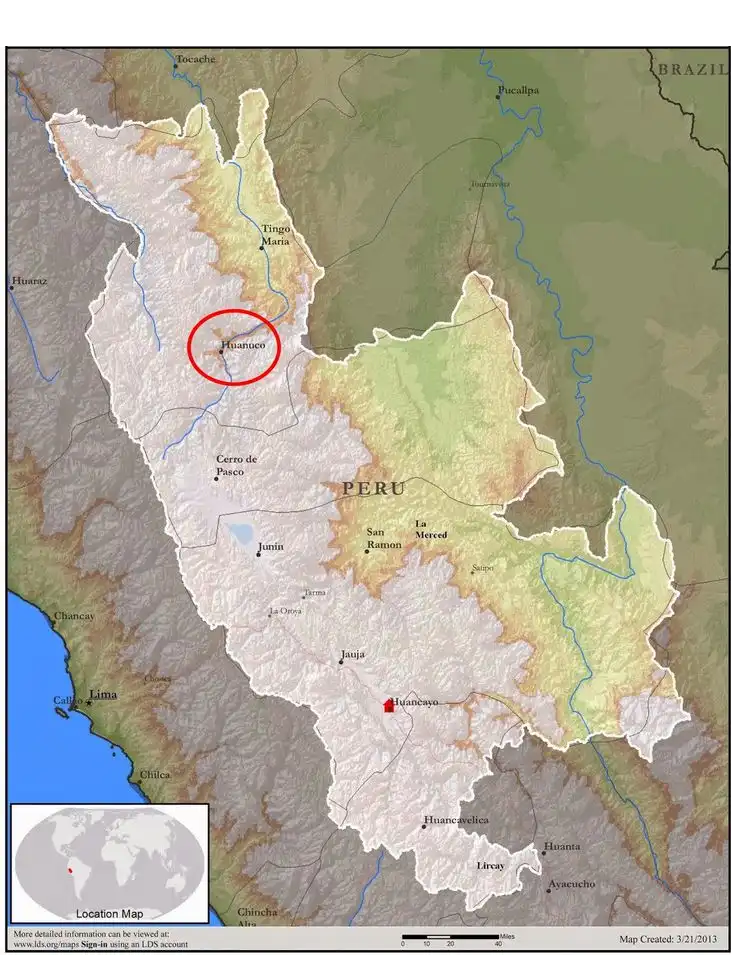
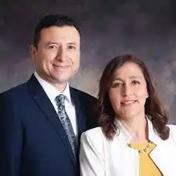

Welcome to my missionary experience
Peru Huancayo Mission

I served as a missionary in the Peru Huancayo Mission from June 2022 to December 2023. I received my missionary calling on March 22, 2022. During this time, I served in six areas: Cayhuayna, La Florida, Chupaca, Columna Pasco, Mariscal Castilla, and Aucayacu. I had ten companions from Peru, Venezuela, and Ecuador.This experience was one of the best of my life. I was able to preach the Gospel and meet new people in different cities with unique traditions—but with the same faith. I know that The Church of Jesus Christ of Latter-day Saints is a big family and the kingdom of God on the earth.
Where is Peru Huancayo Mission?

The Peru Huancayo Mission is a mission headquartered in the city of Huancayo, located in the central highlands of Peru. Established to support the growth of the Church in the region, the mission encompasses a large portion of the central Andes, including cities like Huanuco, Huancavelica, Tarma, and Cerro de Pasco. The area is known for its high elevation, mountainous terrain, and rich indigenous culture. Missionaries serving here often experience a mix of urban and rural assignments, teaching in Spanish and sometimes in local indigenous languages. The mission is focused on teaching the gospel, supporting local congregations, and providing humanitarian service in communities throughout the region.
Who was your President of Mission?
President Paul E. Higueros and Sister Lisbett López de Higueros have been serving as the leaders of the Peru Huancayo Mission. They were called to this position by the First Presidency of The Church of Jesus Christ of Latter-day Saints and began their service in 2022, succeeding President Carlos R. Cabrera Rondón and Sister Liliam M. Cabrera. President Higueros hails from Guatemala City and has a rich background in Church service. Prior to his call as mission president, he served in various leadership roles, including as a stake presidency counselor, high councilor, bishop, and missionary in the Guatemala Quetzaltenango Mission. He is also a temple volunteer and has served as an elders quorum presidency counselor. His wife, Sister Lisbett López de Higueros, has been actively involved in the Church, serving in multiple capacities, including as a stake Relief Society president and a missionary in the Guatemala Quetzaltenango Mission
